In China Employee Termination in 2026: A Cost-Risk Matrix for Foreign Employers Who Need Better Decisions Than “Fastest and Cheapest”
Key takeaways
- In China termination cases, the cheapest visible option is not always the lowest total-risk option for a foreign employer.
- A useful decision model is to score each route across legal defensibility, evidence strength, consistency risk, execution complexity, and likely dispute impact.
- Cost-risk matrix thinking helps regional leaders avoid over-prioritizing quarter-end speed at the expense of legal survivability.
- Payroll should be treated as a control point in risk management because payment labels and treatment can reinforce or undermine legal positioning.
- The practical sequence remains legal-route clarity first, operational execution second.
Legal and regulatory primer for foreign readers
Many international companies evaluate termination through two familiar metrics: immediate cash cost and implementation speed. In China, those metrics are important but incomplete. Termination outcomes are strongly influenced by legal-route validity and evidence coherence, which means a “low-cost” option may still be high-risk if the route cannot be defended consistently.
For non-local readers, the legal framework can be summarized in layers. The Labor Contract Law provides route and consequence fundamentals. The State Council implementation regulation adds practical interpretation for handling and application. Supreme People’s Court labor dispute interpretation offers a dispute-facing view that emphasizes evidence and consistency quality. The Social Insurance Law contributes statutory closure obligations relevant to offboarding period treatment. China Briefing is useful as a practical bridge for multinational employers, translating legal logic into operational decision context.
The main implication is straightforward: China termination should be governed as risk-adjusted legal decisioning, not only as HR process throughput.
Why cost-only thinking fails in China termination
Cost-only thinking is attractive in high-pressure periods because it simplifies reporting: lower payout, faster closure, better quarterly narrative. But this simplification can hide material risk drivers.
First, route misclassification risk is often invisible in early budget models. A case may appear financially efficient under one assumption, but if that assumption is weakly supported, downstream exposure can exceed the initial savings. Second, evidence quality risk is commonly underpriced. Teams may believe facts are clear, yet documentation is inconsistent, incomplete, or poorly indexed. Third, alignment risk is frequently ignored: legal, HR communication, and payroll outputs may diverge even when each function works diligently.
For foreign employers, these hidden risks become especially costly because cross-border decision chains add more handoffs and more opportunities for narrative mismatch. A cost-risk matrix corrects this by forcing multidimensional scoring before release.
Core cost-risk matrix for foreign employers
| Route family | Immediate cash pressure | Legal defensibility sensitivity | Evidence dependency | Alignment risk (legal/HR/payroll) | Dispute impact potential | Total risk-adjusted profile |
|---|---|---|---|---|---|---|
| Mutual-termination-oriented route | Medium | Medium | Medium | Medium | Lower-to-medium | Often stable if documentation and communication are coherent |
| Unilateral employer route | Low-to-medium (if assumed valid) | Very high | High | High | Medium-to-high | Can become highest-risk route if evidence or consistency is weak |
| Contract-cycle / non-renewal-related route | Medium | Medium-to-high | Medium | Medium | Medium | Frequently underestimated; requires full route validation |
| Restructuring / economic reduction context | High | Very high | Very high | High | High | High-governance route; requires segmented control intensity |
This matrix is not legal advice and should not be interpreted as fixed outcomes. Its value is comparative: it helps teams see where apparent short-term cost gains may be outweighed by higher defensibility risk.
Matrix interpretation: hidden risk multipliers foreign teams should watch
Multiplier 1: Route ambiguity disguised as managerial certainty
Managers may be confident in business rationale, but confidence does not confirm legal route suitability. When route labeling is vague or inconsistent, total-risk score should be upgraded immediately.
Multiplier 2: Evidence fragility
If key assertions are not tied to records, risk rises regardless of payout model. Evidence fragility is a common reason low-cost assumptions fail under challenge.
Multiplier 3: Artifact contradiction
When legal rationale, employee communication, and payroll mapping are not fully aligned, credibility can drop quickly in disputes. Alignment failures often emerge late unless a formal gate exists.
Multiplier 4: Unmanaged local uncertainty
City-level implementation differences can change practical handling expectations. If local uncertainty is unresolved, treat all estimates as provisional.
Multiplier 5: Archive weakness
Cases that cannot be reconstructed reliably create additional response cost and governance stress later.
These multipliers should be part of board and regional review, not only local HR discussion.
Scenario application 1: “low-cost” unilateral route under pressure
A regional team seeks fast reduction in people cost and proposes a route expected to minimize immediate payout. Business logic appears strong and timeline pressure is high. During review, legal/HR detect patchy records and inconsistent historical communications.
Matrix reading: immediate cash pressure looks favorable, but defensibility sensitivity and evidence dependency are high. Alignment risk is also elevated because payroll planning started before route stabilization. In risk-adjusted terms, the “low-cost” option scores as high exposure.
Control outcome: hold release, revalidate route, close evidence gaps, and rerun alignment checks before payroll finalization. If route confidence remains weak, evaluate alternatives with better closure control.
Practical takeaway: visible cost is only one column; ignoring the other columns often creates larger total cost.
Scenario application 2: restructuring portfolio with mixed readiness
Headquarters asks for rapid implementation across countries, including China. China case portfolio includes clean files and ambiguous files. Leadership initially requests one consistent pace for reporting simplicity.
Matrix reading: cases should be segmented by total risk-adjusted profile. Clean cases can proceed; ambiguous cases should move to enhanced review or hold status. Applying one pace to all files increases exposure concentration.
Control outcome: classify cases by matrix profile (green/amber/red), align release gates to profile, and report portfolio status by risk tier instead of single completion percentage.
Practical takeaway: matrix segmentation protects both delivery and defensibility.
Secondary operations section (kept below legal and matrix logic)
Legal SOP
- Confirm route classification and confidence level.
- Define mandatory evidence for selected route.
- Approve progression only when risk multipliers are understood.
HR SOP
- Coordinate evidence map and communication artifacts.
- Track matrix profile and gate status by case.
- Own closure checklist and archive completeness.
Manager SOP
- Provide factual chronology and records.
- Avoid premature legal assumptions in communications.
- Escalate urgency conflicts through governance channel.
Payroll SOP
- Keep calculations provisional until route/alignment checks pass.
- Ensure labels and treatment reflect approved rationale.
- Trigger escalation on mismatch.
Vendor/EOR SOP
- Execute tasks with traceable ownership boundaries.
- Preserve artifact transfer integrity.
- Escalate unresolved responsibility gaps.
This operations layer supports the matrix; it does not replace risk scoring.
Exception handling matrix
| Exception type | Typical trigger | Immediate response | Owner | Closure condition |
|---|---|---|---|---|
| Route conflict | Teams use different route labels | Freeze release; reconcile route memo | Legal + HR | One approved route definition |
| Evidence gap | Missing critical supporting record | Roll back to evidence validation | HR + Manager | Evidence threshold restored |
| Alignment mismatch | Payroll labels contradict communication | Block dispatch; reconcile artifacts | HR + Payroll + Legal | Unified approved artifact set |
| Local uncertainty | Unresolved city-level interpretation question | Escalate for local confirmation | Legal/Compliance | Uncertainty resolved or formally acknowledged |
| Archive failure | Files fragmented across teams/vendors | Build indexed repository + owner map | HR + Vendor/EOR | Retrievable closure file complete |
This exception matrix turns incident response into repeatable governance.
System controls and audit trail for matrix discipline
Practical controls can be added without major platform rebuild:
- Add mandatory route field with approval status.
- Add matrix profile field (green/amber/red) with rationale.
- Add evidence-completeness status and blocker owner.
- Add pre-release alignment check tied to payroll finalization.
- Add local-uncertainty flag with escalation workflow.
- Add archive index requirement before closure status can be final.
For multinational reporting, these fields create useful analytics: where risk concentrates, where delays originate, and which controls reduce repeat failures.
Common mistakes and prevention
Mistake 1: Reporting only immediate payout and timeline
Prevention: include defensibility and evidence metrics in decision packs.
Mistake 2: Starting payroll finalization before route confirmation
Prevention: lock final mapping until route/alignment gates pass.
Mistake 3: Treating ambiguous cases as standard cases
Prevention: apply matrix segmentation and differentiated control intensity.
Mistake 4: Assuming vendor participation solves route risk
Prevention: maintain internal accountability for route validity and consistency.
Mistake 5: Declaring closure without archive readiness
Prevention: make archive index a hard close condition.
What to do now
- Adopt a standard cost-risk matrix template for all China termination cases.
- Require legal-route and evidence scoring before business approval.
- Add three-way alignment check (legal, HR, payroll) as release condition.
- Segment case portfolios into green/amber/red for governance reporting.
- Define local-confirmation triggers for uncertain case patterns.
- Add exception matrix ownership rules and escalation routing.
- Implement archive index standards across internal and vendor teams.
- Run quarterly review of matrix outcomes and dispute learnings.
These steps improve predictability without overcomplicating execution.
What to watch next
Foreign employers should monitor local dispute-practice trends affecting evidence treatment, organizational pressure cycles that encourage shortcut behavior, and policy drift where global templates underweight China-specific route logic. Matrix governance is strongest when refreshed with real case outcomes.
Source-fit reassessment for this run
This run rotates back to a cost-risk matrix structure from scenario-led framing while keeping source quality stable. Official legal texts and judicial interpretation remain the factual base; China Briefing remains the practical multinational translation layer. We did not prioritize tax-dominant or broad comparative sources because this article focuses on route defensibility and risk-adjusted decisioning.
FAQ
1) Why is a cost-risk matrix better than a simple checklist?
A matrix makes tradeoffs explicit when decisions involve competing goals like speed, cost, and defensibility.
2) Does matrix use mean slower decisions?
Not necessarily. It can accelerate clean cases and isolate only ambiguous cases for deeper review.
3) Can a low-payout option still be high-risk?
Yes. If route support or evidence quality is weak, total exposure can exceed initial savings.
4) Where does payroll fit in this model?
Payroll is a consistency control point and should be part of release gating.
5) Is this framework legal advice for specific cases?
No. It is informational and should be paired with qualified local professional advice.
6) How often should the matrix be updated?
At minimum quarterly, or sooner when significant policy/practice signals change.
Disclaimer
This article is for informational purposes only and does not constitute legal, tax, accounting, or compliance advice. China employment outcomes depend on case facts and local implementation practice. Employers should seek qualified local professional advice before making case-level decisions.
Sources
- National People’s Congress. Labor Contract Law of the People’s Republic of China (official English text; adopted 2007-06-29, amended 2012-12-28). http://www.npc.gov.cn/zgrdw/englishnpc/Law/2007-12/13/content_1384064.htm (accessed 2026-02-27).
- State Council. Regulations for the Implementation of the Labor Contract Law of the PRC (State Council Decree No. 535; official publication). https://www.gov.cn/gongbao/content/2008/content_1124615.htm (accessed 2026-02-27).
- Supreme People’s Court. Interpretation on Issues Concerning the Application of Law in the Trial of Labor Dispute Cases (I) (2020 amendment). https://www.court.gov.cn/fabu/xiangqing/243981.html (accessed 2026-02-27).
- National People’s Congress. Social Insurance Law of the People’s Republic of China (official English text; adopted 2010-10-28). http://www.npc.gov.cn/zgrdw/englishnpc/Law/2009-02/20/content_1471106.htm (accessed 2026-02-27).
- Dezan Shira & Associates (China Briefing). Employee Termination in China: A Guide for Employers (updated 2025). https://www.china-briefing.com/news/employee-termination-in-china/ (accessed 2026-02-27).
China-Payroll.com supports foreign employers with compliance-first EOR and payroll operations in China.
Need local employment support in China?
If you need a compliance-first partner for hiring, payroll, and risk controls in China, China-Payroll.com can help evaluate the right setup.
Image Prompt Pack
Create a 16:9 hero image for article title: 'In China Employee Termination in 2026: A Cost-Risk Matrix for Foreign Employers Who Need Better Decisions Than “Fastest and Cheapest”'. Scene: global operations team evaluating workforce model options for China mark…